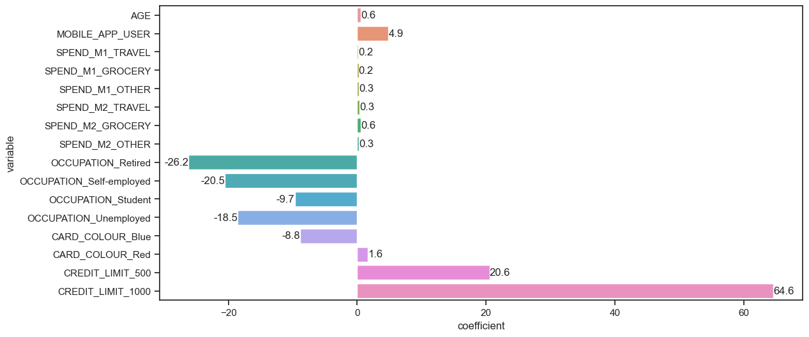

OLS Regression Results
==============================================================================
Dep. Variable: SPEND_M3_TOTAL R-squared: 0.754
Model: OLS Adj. R-squared: 0.754
Method: Least Squares F-statistic: 1436.
Date: Sat, 05 Aug 2023 Prob (F-statistic): 0.00
Time: 09:25:31 Log-Likelihood: -40331.
No. Observations: 7500 AIC: 8.070e+04
Df Residuals: 7483 BIC: 8.081e+04
Df Model: 16
Covariance Type: nonrobust
============================================================================================
coef std err t P>|t| [0.025 0.975]
--------------------------------------------------------------------------------------------
const -0.2058 3.194 -0.064 0.949 -6.466 6.055
AGE 0.5894 0.055 10.721 0.000 0.482 0.697
MOBILE_APP_USER 4.8583 1.422 3.417 0.001 2.071 7.645
SPEND_M1_TRAVEL 0.1536 0.015 10.140 0.000 0.124 0.183
SPEND_M1_GROCERY 0.2202 0.021 10.716 0.000 0.180 0.260
SPEND_M1_OTHER 0.2604 0.018 14.475 0.000 0.225 0.296
SPEND_M2_TRAVEL 0.3482 0.017 20.315 0.000 0.315 0.382
SPEND_M2_GROCERY 0.5847 0.023 25.256 0.000 0.539 0.630
SPEND_M2_OTHER 0.3018 0.019 16.279 0.000 0.265 0.338
OCCUPATION_Retired -26.1656 2.224 -11.767 0.000 -30.525 -21.807
OCCUPATION_Self-employed -20.5128 2.152 -9.530 0.000 -24.732 -16.294
OCCUPATION_Student -9.7006 1.663 -5.834 0.000 -12.960 -6.441
OCCUPATION_Unemployed -18.5319 1.982 -9.348 0.000 -22.418 -14.646
CARD_COLOUR_Blue -8.8431 1.851 -4.777 0.000 -12.472 -5.214
CARD_COLOUR_Red 1.6351 1.339 1.221 0.222 -0.990 4.260
CREDIT_LIMIT_500 20.5617 1.503 13.681 0.000 17.616 23.508
CREDIT_LIMIT_1000 64.6002 2.476 26.086 0.000 59.746 69.455
==============================================================================
Omnibus: 1078.809 Durbin-Watson: 1.982
Prob(Omnibus): 0.000 Jarque-Bera (JB): 8572.821
Skew: 0.448 Prob(JB): 0.00
Kurtosis: 8.160 Cond. No. 796.
==============================================================================
Notes:
[1] Standard Errors assume that the covariance matrix of the errors is correctly specified.Step Up - Capital One
A regression model was fitted to the data.
The variables ‘PARENT’ and ‘REGION’ were not found to be significant and were consequently dropped from the model.
The regression results used for analysis are as follows.
The fit was evaluated with the following metrics.
RMSE: 51.077
R_squared: 0.754With an R-squared of around 0.75, the fit is reasonable.
An RMSE of around 50 means that the value of SPEND_M3_TOTAL predicted by the model differs on average from the observed value by around 50 pounds.
The baseline was taken to be a person that has the characteristics OCCUPATION_EMPLOYED, CARD_COLOUR_Black and CREDIT_LIMIT_250, so the regression coefficients in the respective categories are in comparison to these values.
The regressions coefficients are as follows.

The insights from regression
The total spend in month 3 is expected to increase by
- 0.6 pounds for each year of a person’s age
What does this mean?
Age is predictive of more spending. For example, a 60 year old is expected to spend on average 18 pounds more than a 30 year old in month 3.
What can we do?
While the difference in spending for older and younger people is not very large, we can consider focusing our advertising efforts on avenues more likely to reach younger people (internet and social media vs tv and radio).
The total spend in month 3 is expected to increase by
0.2 pounds for each pound spent on travel in month 1
0.2 pounds for each pound spent on grocery in month 1
0.3 pounds for each pound spent on other in month 1
0.3 pounds for each pound spent on travel in month 2
0.6 pounds for each pound spent on grocery in month 2
0.3 pounds for each pound spent on other in month 2
What does this mean?
Spending in previous months is predicitive of more spending in month 3. This effect seems to be stronger for more recent months. This isn’t neccessarily something that we can use for business strategy.
Compared to a non-mobile app user
- A mobile app user is expected to spend on average 4.9 pounds more in month 3
What does this mean?
Mobile app users spend on average more in month 3.
What can we do?
Encourage customers to install the app. As an example, create a lottery system that each month rewards new sign-ups with 50 pounds.
Compared to a person that’s employed
- A person that’s retired is expected to spend on average 26.2 pounds less in month 3
- A person that’s self-employed is expected to spend on average 20.5 pounds less in month 3
- A person that’s a student is expected to spend on average 9.7 pounds less in month 3
- A person that’s unemployed is expected to spend on average 18.5 pounds less in month 3
What does this mean?
Employed customers tend to spend the most, while retired and self-employed customers tend to spend the least. Interestingly, the spending of students and unemployed customers lies somewhere in the middle.
What can we do?
Create separate ad campaigns targetting specifically retired and self-empoyed customers.
Encourage (by email, or notification on the app) employed customers to submit customer-satisfaction surveys rating their experience with the company and sharing their feedback.
Compared to a person with a black card
- A person with a blue card is expected to spend on average 8.8 pounds less in month 3
- A person with a red card is expected to spend on average 1.6 pounds more in month 3
What does this mean?
It appears that customer’s with blue cards spend less, while customers with black and red cards spend about the same. The idea that card color on it’s own influences spending does not seem to be reasonable. We can investigate if card color is tied, for example, to credit limit.
Among black cards
a propotion of 0.518375 has a credit limit of 250
a proportion of 0.300636 has a credit limit of 500
a proportion of 0.180989 has a credit limit of 1000.
Among blue cards
a propotion of 0.540123 has a credit limit of 250
a proportion of 0.308642 has a credit limit of 500
a proportion of 0.151235 has a credit limit of 1000.
Among red cards
a propotion of 0.509137 has a credit limit of 250
a proportion of 0.304978 has a credit limit of 500
a proportion of 0.185885 has a credit limit of 1000.It does seem that among blue card owners there is more customers with a credit limit of 250 and less customers with a credit limit of 1000. That might at least partially explain why blue card owners are expected to spend less.
Compared to a person with a credit limit of 250
- A person with a credit limit of 500 is expected to spend on average 20.6 pounds more in month 3
- A person with a credit limit of 1000 is expected to spend on average 64.6 pounds more in month 3
What does this mean?
This is perphaps an unsurprising result - people with higher credit limits spend more on their credit cards. This, of course, does not mean that raising all customer’s credit limits is a good idea.
What can we do?
Periodically review credit limits and notify customer’s if they are eligible for a credit limit increase.